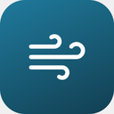
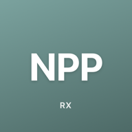

Sistemas do Hospital
iDoctor
Prontuário eletrônico
SOFTLAB
Sistema de exames laboratoriais
HemoSys
Sistema de gestão HEMOAM
ZAFAZ — Imagem
Sistema de exames de imagem
Ferramentas da UTI Pediátrica
SBAR
Comunicação estruturada de passagem de plantão
Visita Multiprofissional
Checklist da visita multiprofissional por leito
Admissão na UTIP
Ferramenta de admissão e evolução
Folha de Parada
Doses por peso, tubo e desfibrilação/cardioversão
Impressos
Formulários para baixar: APAC, exames e raio X
Diluição de Medicamentos
Tabela de diluição IV pediátrica — Manual Farmacêutico Einstein

Fisioterapia
Fichas e protocolos de suporte ventilatório para baixar

Calculadora de NPP
Prescrição de nutrição parenteral pediátrica